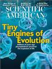

YES! Send me a free issue of Scientific American with no obligation to continue the subscription. If I like it, I will be billed for the one-year subscription.

Scientific American is a trademark of Scientific American, Inc., used with permission